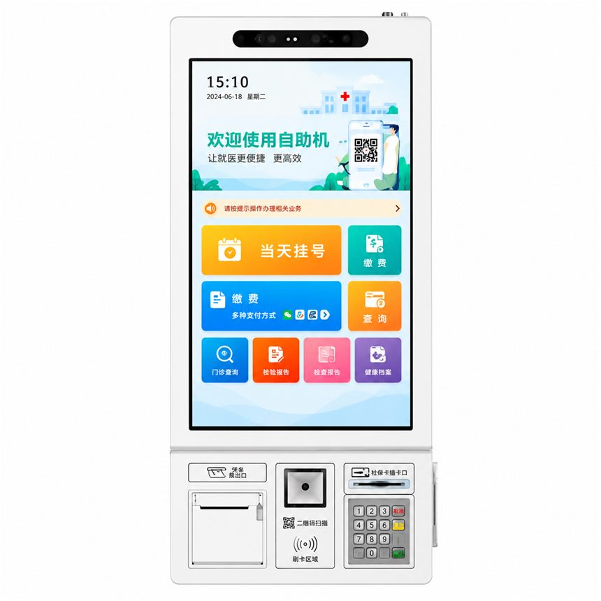

CHECKOUT EXPERIENCE
Self-Payment Kiosks
Payment-ready kiosk hardware layouts with space for scanners, printers and third-party payment devices.
Self-payment kiosks can help businesses move common checkout steps to a user-friendly terminal. Payment functions depend on the chosen certified provider, region and software integration; each project should confirm requirements before selecting hardware.
Configuration scope
Options to discuss for your project. Final specifications and module compatibility depend on the selected platform and requirements.
- Touch display and industrial PC options
- Barcode/QR scanning position
- Receipt printer integration
- Mounting for third-party payment devices
- Network and software-interface planning
Typical applications
01
Retail self-checkout
02
Service fee collection
03
Parking and utility payments
Before you request a quote
Which payment service provider and country are involved?
Share the answer together with your target market, quantity and schedule so the configuration can be assessed.
Which payment device models are approved?
Share the answer together with your target market, quantity and schedule so the configuration can be assessed.
Are cash acceptance or dispensing devices required?
Share the answer together with your target market, quantity and schedule so the configuration can be assessed.
Request a quote
Send your requirements, preferred dimensions, peripherals and estimated order volume. We reply with the questions that still need answers and the next step.
Reference units in this category
Terminals from our build range that serve this category. Each page lists the modules visible on the unit and the operating systems supported.